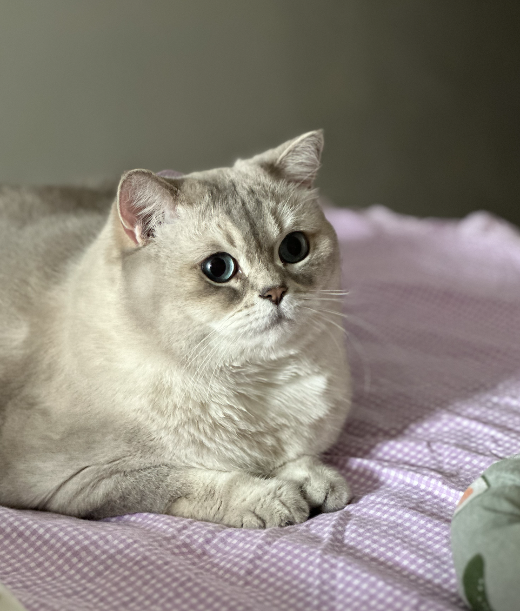

In my second year of university, I finally welcomed the kitten I had dreamed of for so long. I named him Tianfu (添福), meaning "bringing extra good fortune." Since then, Tianfu has been my little study companion, keeping me company from one side of the world to the other.
In addition to keeping me company while I study, Tianfu has his own pursuits, specializing in eating and sleeping since 2019. More recently, he has developed an interest in pet technology, including investigating how to operate a cat water dispenser.
